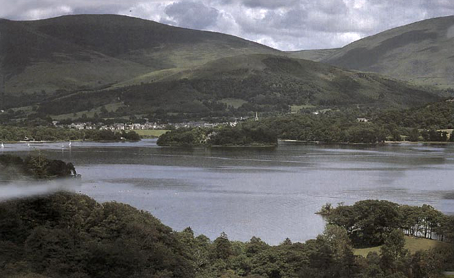

Built along the shores of Toluca Lake and located in Toluca County, Silent Hill appears to be an expanding mid-sized town or city. Surrounded by hills, woods, mountains, and rivers, it has become a destination for boaters and nature lovers. Silent Hill is bisected horizontally by the lake. Because of this, the district of Paleville is in the northern area, and South Vale is on the opposing lake shore. The town's weather is usually foggy and misty, amplified by the lake on colder days, as sunny days are a rarity. As one approaches Silent Hill from the east along Nathan Avenue, also known as County Road 73, an observation deck can be accessed, providing a fine panoramic view of Toluca Lake and the surrounding woodland. Various prominent welcome signs are on display near several of the entrances, serving to welcome newcomers upon their arrival .
Going back well before European explorers arrived in the Americas, Silent Hill's history is plentiful. A great deal of its past involves the various religious/occult rituals that had been conducted in the area in the past, and continue to be conducted in the present, usually, but not always, by members of the Order. While Toluca Lake and the area around it has always seemed to be a place of strange activity, it seems that this activity can be separated into two distinct phases. The first is the series of events prior to the 20th century, such as it being under control of natives and the arrival of European settlers, leading to the founding of Silent Hill. The second phase is a series of events beginning in the latter half of the 20th century, seeming to culminate, at present, with the events seen in Silent Hill: Homecoming.
The game follows Harry Mason as he searches for his missing adopted daughter in the eponymous fictional American town of Silent Hill; stumbling upon a cult conducting a ritual to revive a deity it worships, he discovers her true origin. Five game endings are possible, depending on actions taken by the player, including one joke ending.